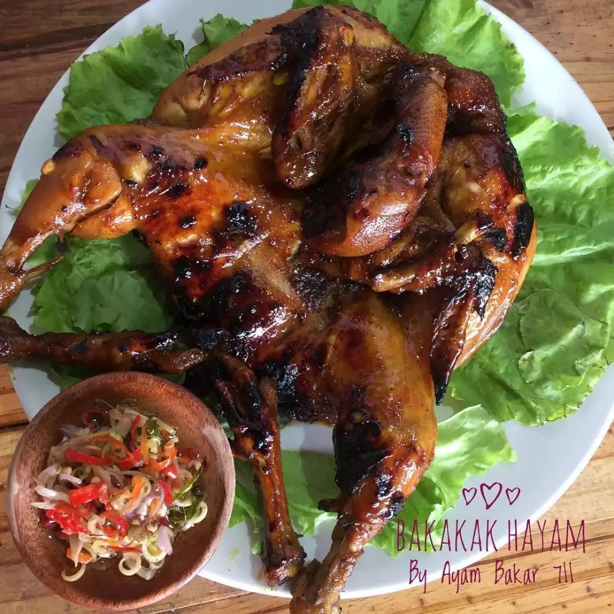

Bakakak Hayam

Olahan ayam utuh yang di bakar setelah terlebih dahulu diungkep dengan racikan bumbu manis
Bakakak hayam merupakan kuliner tradisional khas Sunda.
Bakakak hayam adalah makanan pendamping atau lauk pauk untuk kelengkapan makan nasi.
Bekakak berarti korban penyembelihan hewan atau manusia. Karena bentuknya yang seperti seseorang yang duduk
bersila, maka disebutlah ayam bekakak dan dalam Bahasa Sunda disebut Bakakak.
Bahan-bahan
- 1 ekor ayam utuh, belah tengah, cuci bersih
- 2 lembar daun salam
- 1 batang serai geprek
- 400-500 ml air
- garam, gula merah, kaldu bubuk secukupnya
- 2 ruas kunyit tua bakar
- 3 siung bawang putih
- garam secukupnya
- siung bawang merah
- 4 siung bawang putih
- 1 cm jahe
- 2 cm lengkuas
- 3 butir kemiri
- 1 sdt ketumbar bubuk
- 1/2 sdt lada halus
- buah cabai merah/sesuai selera
Cara membuat
- Haluskan bumbu rendaman, balurkan pada ayam. Tuang air biarkan terendam selama 45 menit.
- Tumis bumbu halus hingga harum, beri salam dan serai tumis sebentar. Masukkan ayam beserta air rendaman,
masak sampai mendidih.
- Setelah mendidih, kecilkan api. Tuang santan, beri gula, garam, kaldu bubuk, tes rasa.
- Ungkep ayam hingga empuk dan air asat.
- Sisihkan sisa bumbu tadi, beri kecap manis. Oleskan pada ayam, bakar ayam atau panggang di teflon sampai
matang.
- Siap disajikan dengan lalapan dan sambel terasi.
Return to Mainpage